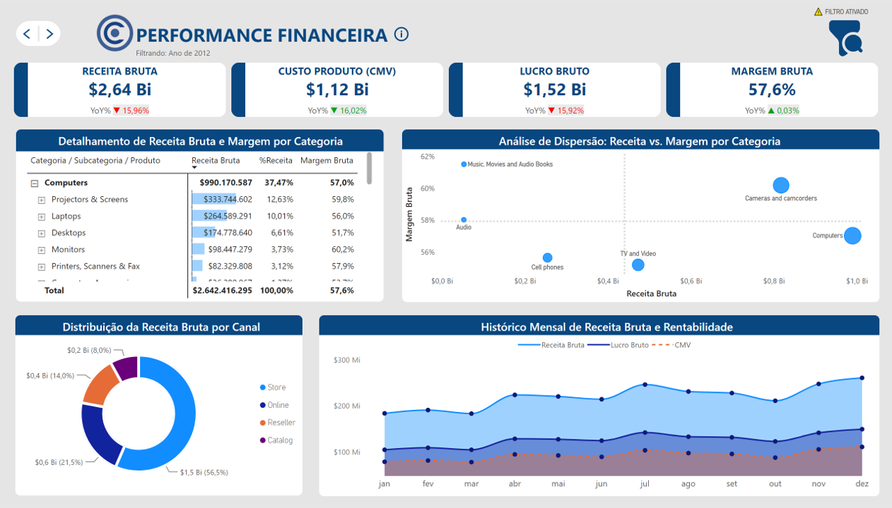
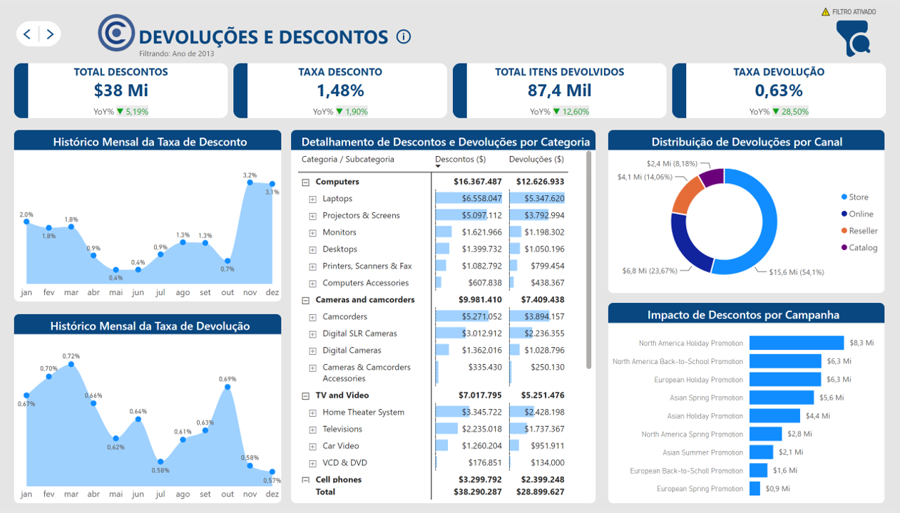
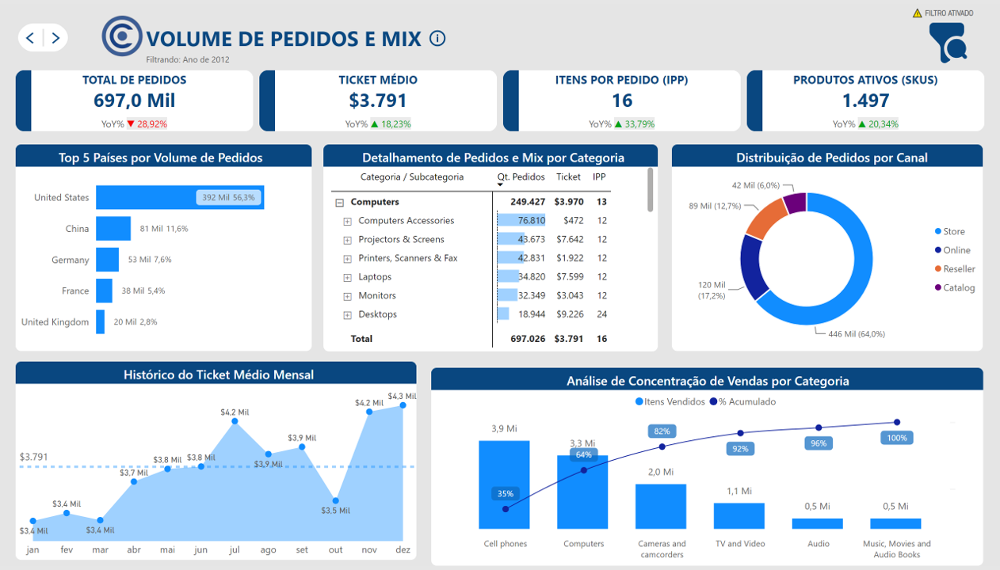

Bi-Book Corporativo – Contoso Inc.



Origem dos Dados e Contexto do Negócio
Este projeto foi desenvolvido utilizando a base de dados pública e fictícia Contoso, disponibilizada pela Microsoft. A Contoso simula uma multinacional do setor de varejo e eletroeletrônicos com operações em múltiplos continentes — comercializando mais de 1.500 SKUs ativos por meio de quatro canais distintos: Lojas Físicas (Store), E-commerce (Online), Revendedores (Reseller) e Catálogo. Cada canal possui sua própria dinâmica de ticket médio, política de desconto e comportamento de devolução, o que torna a análise integrada entre eles especialmente relevante para a gestão do resultado.
Para garantir robustez e performance ao trabalhar com um volume transacional massivo de mais de 2 milhões de linhas de registros, os dados brutos foram extraídos via DAX Studio diretamente do modelo semântico, tratados estruturalmente no Power Query e organizados sob uma modelagem relacional otimizada em Star Schema (Tabelas Fato e Dimensão). Toda a camada de inteligência analítica foi codificada puramente em DAX.
Contexto e Visão de Negócio
No varejo, a rentabilidade raramente se perde de uma vez. Ela escoa por decisões mal calibradas: descontos concedidos sem evidência de retorno, devoluções concentradas nos mesmos produtos, canais que vendem volume mas entregam margem abaixo do esperado.
Os dados para enxergar isso existem — o desafio é estruturá-los de forma que respondam perguntas reais de gestão. Foi esse o ponto de partida deste projeto: transformar o volume transacional da Contoso em uma leitura clara sobre onde o resultado está sendo construído e onde está sendo perdido.
Para isso, o dashboard foi estruturado sob a ótica financeira, respondendo diretamente a quatro perguntas estruturais de gestão corporativa:
- As campanhas promocionais trouxeram ganho real ou apenas sacrificaram a margem líquida?
- O que variou a rentabilidade: mudança na concentração do mix de produtos ou aumento de custos operacionais?
- Quais categorias e SKUs sustentam o faturamento e quais performam abaixo do esperado?
- Onde estão os gargalos logísticos de devolução e qual canal penaliza mais o resultado?
Solução Modular — Bi-Book com 3 Visões Decisoriais
O dashboard foi dividido em três visões independentes e complementares, cada uma orientada a um eixo de decisão distinto:
1. Performance Financeira
Acompanha a evolução da Receita Bruta, do CMV e da Margem Bruta Comercial, segmentados por canal e período. O Scatter Plot de Receita vs. Margem por categoria revela, em uma leitura única, quais linhas têm alto volume com margem comprimida — e quais têm margem elevada mas volume sub-explorado.
2. Devoluções e Descontos
Monitora o impacto financeiro direto das concessões comerciais e das devoluções sobre o resultado global da companhia. Correlaciona o histórico mensal da taxa de desconto com o da taxa de devolução — permitindo à equipe de vendas identificar se os estímulos promocionais geram incremento real de vendas ou apenas antecipam devoluções.
3. Volume de Pedidos e Mix
Examina o comportamento macro de compra através de métricas de eficiência como Ticket Médio, Itens por Pedido e SKUs Ativos. A aplicação do princípio de Pareto sobre o volume de itens vendidos por categoria torna imediata a leitura de concentração, destacando graficamente as linhas que respondem por 80% do volume transacionado.
O que os dados revelaram (Insights de Negócio)
Qualidade de venda no físico: O canal Store concentra 58,2% da receita bruta e 58,5% das devoluções globais. Essa proporção quase idêntica sugere que o alto volume não está se convertendo em boas vendas, apontando a necessidade de revisão nos processos de pós-venda e atendimento físico.
Mix vs. Margem: A categoria Music, Movies & Audio Books opera com uma excelente margem bruta acima de 60% (quase 5 pontos acima da média), mas representa apenas 2% da receita bruta. Em contrapartida, Computers lidera o faturamento (+38% da receita) com margem de 57%. Há uma oportunidade clara de rebalancear o mix promocional em favor das categorias mais rentáveis.
Carrinho grande, Ticket pequeno: Cell phones lidera em volume com 3,9 Mi de itens vendidos e 36% de concentração, mas opera com ticket médio de $2.200 — cerca de 80% abaixo do ticket de Computers ($3.970). A categoria que mais vende em quantidade é a que menos rentabiliza por pedido, sinalizando oportunidade clara de estratégia de upsell e bundle para elevar o valor do carrinho dentro da própria categoria.